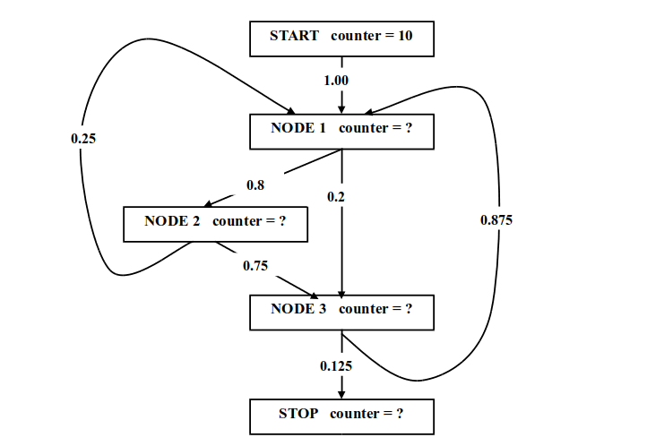

Требования к соискателям и примеры вопросов (всего 13 вопросов).
Общая информация
В нашей компании работает несколько групп специализирующихся на создании oптимизирующего двоичного транслятора, оптимизирующего native компилятора а также контроля качества и анализа производительности компиляторов. Эти команды решают сложные, а иногда и уникальные задачи оптимизирующей трансляции для архитектуры широкого командного слова (VLIW, aka EPIC).
Возможно, Вы решите попробовать стать нашим сотрудником и, скорее всего, то же самое попробуют сделать еще некоторое количество человек. Все что написано ниже, написано от имени и по поручению компании «Эльбрус» и имеет своей целью оптимизировать процесс принятия решения о том, что Вы подходите (или не подходите) нам, а мы - Вам.
К сожалению, в России серьезные работы и исследования в области оптимизирующей двоичной трансляции (как native, так и двоичной) для VLIW / EPIC архитектур ведутся только в нашей компании. К сожалению, для России, потому что это технологии будущего, и к сожалению для нас потому что нам не приходится рассчитывать на то, что Вы являетесь специалистом с опытом работы в этой области. Поэтому первое, что придется сделать Вам, если Вы станете нашим новым сотрудником - освоить огромное количество информации (а учебники в этой области еще не написаны), понять основные проблемы и пути их решения, а главное - научиться думать в специфических для нашей области терминах и категориях.
Мы делаем интересную, но зачастую очень сложную работу. Поэтому мы хотим найти не просто опытных системных программистов имеющих такие-то сертификаты и знающие такие-то системы (как раз это волнует нас в меньшей степени - мы программируем «с нуля» на чистом Си и на ассемблере, поэтому Вам достаточно иметь опыт программирования на чем-нибудь и хорошо знать Си). Мы хотели бы расширить группу молодыми, энергичными, умными, нестандартно мыслящими, быстро обучающимися и быстро соображающими людьми способными к системному анализу сложных проблем, нахождению оптимальных решений и реализации их в виде качественных программ.
То, что Вы имеете опыт системного программирования и знаете Си, не сложно отразить в резюме и не сложно проверить. В то время как требования, изложенные в предыдущем абзаце, весьма сложно формализовать, а Ваше соответствие им сложно изложить в резюме и тем более сложно проверить во время интервью. Каждый новый сотрудник принятый на испытательный срок требует больших затрат времени на некоторую минимальную подготовку после которой ему можно поручить первую самостоятельную работу. Оценка Вашего потенциала может таким образом растянуться на несколько месяцев, и если реальность разойдется с Вашими обещаниями и нашими ожиданиями будет просто жалко бессмысленно потраченного Вами и нами времени.
Для оптимизации этого процесса мы подготовили небольшой набор вопросов и заданий и предлагаем его Вам в качестве предварительного теста. Этот тест не является тестом на знания (возможно, некоторые вопросы могут потребовать от Вас поиска вспомогательной информации, но ответов на большинство вопросов ни в одной книге все равно нет). Прямым тестом умственных способностей он также не является. А некоторые задания вообще не имеют однозначных ответов и являются скорее средством оценить Ваши способности к анализу и рассуждению. Тем не менее, мы предполагаем, что человек, попытавшийся решить некоторые задания этого теста и справившийся с некоторыми из них, имеет гораздо больше шансов успешно пройти испытательный срок и стать нашим сотрудником.
Поэтому на интервью по поводу устройства на работу в нашу команду будут приглашаться в первую очередь те, кто пришлет ответы на несколько вопросов нашего теста.
Мы понимаем, что предварительное off-line тестирование не является широко распространенным методом набора сотрудников. Тем не менее, мы выбрали именно этот метод, так как он, даже с учетом риска «отпугнуть» часть потенциальных кандидатов, представляется наиболее адекватным нашим требованиям. Если что-то в нашем предложении показалось Вам оскорбительным, неприемлемым etc - примите наши извинения.
В силу описанной выше специфики мы заинтересованы только в долговременном сотрудничестве. Если Вы ищете работу на полгода или год - нас это категорически не устраивает. В то же время Ваше решение потратить некоторое количество собственного времени на участие в предварительном тестировании уже косвенно свидетельствует о серьезности Ваших намерений.
Вы сами выбираете на какое количество вопросов Вы хотите ответить. Вы сами выбираете вопросы и форму ответа на них. Вам придется смириться с мыслью о том что Вы не получите от нас рецензии на свои ответы. Единственный ответ, который Вы можете от нас получить - это приглашение на интервью. Отсутствие приглашения в течение двух недель является отказом. Заранее приносим свои извинения всем, кто приглашения не получит.
В нашей компании много интересных направлений работы поэтому вполне вероятно что не получив приглашения от нашего подразделения Вы получите приглашение на интервью от других подразделений компании.
Перед тем как перейти к содержанию теста, позвольте изложить несколько дополнительных просьб касающихся Вашего резюме. Во-первых, в резюме нужно указать, что к нему прилагаются ответы на вопросы теста, и что Вы хотите в первую очередь пройти интервью с одним из руководителей работ по оптимизирующей трансляции.
В резюме, конечно, положено писать о том какие версии каких систем Вы освоили. Но нас гораздо больше интересует, например информация о том участвовали ли Вы в олимпиадах по математике и/или программированию и чего там добились. Конечно, в резюме положено описывать созданные Вами системы, но нас гораздо больше интересует не количество строчек кода написанного Вами за период Вашей профессиональной деятельности, а количество созданных Вами алгоритмов которые Вы сами считаете оригинальными и интересными.
Нас также интересует информация о Вашем опыте работы с большими программными проектами, а также степень Вашего участия не только в написании кода и отладке, но также и в разработке стратегии проекта, архитектуры программы, а также «правил игры» проекта.
Кроме того, хотелось бы знать объем Ваших представлений о компиляции и оптимизации, о современных микропроцессорных архитектурах, о теории графов и практике ее применения в программировании. Интересной для нас будет информация о степени Вашего знакомства с системой команд x86, а также с «кишками» операционных систем Windows и Linux.
Ни один из перечисленных пунктов не является обязательным - это просто дополнительная информация, которая при благоприятных обстоятельствах может повысить Ваши шансы на приглашение на интервью.
Теперь перейдем непосредственно к вопросам теста. Последняя просьба - нам будет очень полезно, если после ответа на вопрос теста Вы укажете, что свой ответ Вы знали заранее, нашли в каком-то источнике или придумали сами. Разумеется, это также не является обязательным требованием.
Многие задания содержат более одного вопроса. Вы можете отвечать на все вопросы задания или на некоторые из них. Порядок вопросов и заданий не отражает ни степени их сложности, ни степень их значимости. Просто выбирайте те из них, которые показались Вам интересными.
Вопросы
1. Рассмотрим ациклический направленный граф c выделенным стартовым узлом содержащий N узлов. Топологической сортировкой узлов (также известной как RPO-нумерация или N-нумерация) ациклического графа называется алгоритм, присваивающий узлам графа номера от 1 до N таким образом, что все предшественники узла с номером M имеют номера меньше M.
Предложите линейный от числа дуг графа алгоритм топологической сортировки ациклического графа. Здесь и далее под графом мы будем понимать только направленный граф. Подсказка: постарайтесь поэксплуатировать тот факт, что число узлов графа известно заранее.
Теперь рассмотрим произвольный граф, содержащий циклические пути. Независимо от конкретного алгоритма часть дуг этого графа не будут удовлетворять требованиям топологической сортировки (то есть будут иметь предшественника с номером меньшим или равным номеру преемника) – эти дуги называют обратными.
Нумерация на произвольном графе отвечает требованиям топологической сортировки, если для дуг, определенных как обратные, выполняются следующие требования:
Понятно, что для конкретного графа существует множество нумераций удовлетворяющих требованиям топологической сортировки. Каждая из них может обнаружить разный набор обратных дуг. Требуются ли какие-то модификации предложенного Вами алгоритма топологической сортировки для обработки произвольного графа?
Ну и последний дополнительный (и необязательный) вопрос для знатоков анализа цикловой топологии (если таковые найдутся): существует ли класс графов (разумеется, помимо ациклических) для которых топологическая сортировка однозначно определяет номенклатуру обратных дуг?
2. В теории графов есть понятие сильно связанной компоненты. Это максимальный с точки зрения включения узлов подграф, в котором любой узел достижим из любого узла.
Более строгое определение: нетривиальная сильно связанная компонента есть подмножество узлов графа таких, что каждый достижим из каждого (в том числе и каждый из себя самого). При этом если два узла достижимы друг из друга, то они должны принадлежать одной компоненте.
Тривиальные компоненты (то есть отдельные узлы не достижимые сами из себя) мы не рассматриваем и далее под компонентой понимаем именно нетривиальную компоненту.
Определение сильно связанных компонент не содержит произвола – номенклатура сильно связанных компонент и принадлежащих им узлов для любого графа определяются однозначно.
Попробуйте проанализировать свойства предложенного Вами (или найденного в литературе) алгоритма топологической сортировки и определите какие из ниже перечисленных свойств выполняются для топологической сортировки на произвольном графе:
а. Если из графа удалить все дуги, которые сортировка определила как обратные, в графе не останется ни одной сильно связанной компоненты (в дальнейшем просто компоненты)
б. Для узлов принадлежащих одной компоненте наименьший номер будет иметь тот узел, в который обход графа во время нумерации зашел первым (узел компоненты с наименьшим среди всех узлов компоненты номером назовем головой компоненты)
в. Все входные дуги любой компоненты исходят из узлов с номерами меньшими чем номер головы компоненты
г. Узлы любой компоненты пронумерованы компактно (то есть компонента имеющая голову с номером H и содержащая узел с номером K при любом варианте топологической сортировки содержит узлы с номерами от H до K).
д. Все выходные дуги любой компоненты входят в узлы с номерами большими, чем номер любого узла компоненты
е. Все выходные дуги любой компоненты входят в узлы с номерами большими, чем номер головы компоненты
ж. Все обратные дуги входят в головы сильно связанных компонент
з. Голова любой компоненты имеет по меньшей мере одну входную обратную дугу
В качестве необязательного дополнительного упражнения попробуйте среди тех свойств которые по Вашему мнению не соблюдаются для произвольной топологической сортировки определить те, для которых существует вариант топологической сортировки при котором эти свойства соблюдаются (интересен не алгоритм который обеспечит некоторое дополнительное свойство нумерации а просто сам факт существования такого варианта нумерации для произвольного графа).
3. Теперь рассмотрим граф не как математическую абстракцию, а как реальную структуру данных. Для компилятора эта структура крайне важна, так как большинство результатов анализа программы представляется в виде графов (граф управления, потоковый граф, граф зависимостей, граф вызовов и так далее).
Многие из этих графов сильно разрежены, поэтому представление графа должно быть линейным по памяти от числа дуг и узлов.
Представление графа не должно требовать нелокальной коррекции в случае создания, удаления или перенаправления дуг.
И самое главное: представление графа должно обеспечивать максимально быстрый обход входных и выходных дуг узла и получения преемника и предшественника дуги. При этом обход дуг должен быть однородным, то есть подходящим для обработки узла с неизвестным числом преемников и предшественников (например, способ получения четвертой входной дуги не должен отличаться от способа получения пятой входной дуги).
Какую структуру данных Вы бы сочли наиболее подходящей для реализации графа ?
4. Продолжим рассмотрение графа как структуры данных. Большинство алгоритмов на графах требуют поддержки разбиения узлов и дуг на маркированные и немаркированные (например, уже пройденные или еще не пройденные при некотором обходе).
Введем понятие маркера и связанный с ним интерфейс:
Для только что выделенного маркера должно гарантироваться отсутствие в графе дуг и узлов, маркированных этим маркером.
Выделение и освобождение маркера (не говоря уже о других действиях с маркерами) должно выполняться за время, не зависящее от числа узлов и дуг графа или от числа преемников или предшественников некоторого узла.
Иногда необходимо классифицировать узлы по нескольким ортогональным признакам – из этого вытекает необходимость обеспечить одновременную работу с несколькими маркерами. Обычно их нужно не более 3-4, поэтому реализация может ограничивать число одновременно доступных маркеров.
Иногда возникает необходимость организации многоцветной раскраски - такой, что маркирование одним маркером автоматически приводит к снятию маркирования несколькими другими маркерами. Понятно, что наличие четырех маркеров позволяет организовать раскраску в 16 цветов, но это неудобно. Впрочем, наличие эффективной многоцветной раскраски не обязательно, но весьма желательно.
Важной особенностью работы с маркерами является то, что выделенным маркером не всегда размечается весь граф. Иногда маркер выделяется для работы в некотором ограниченном подграфе или, например, для разметки подмножества входных дуг некоторого узла. Поэтому реализация механизма маркеров в графе не должна основываться на некоторых гарантированных свойствах алгоритмов обработки графа, в том числе, например она не может требовать безусловного маркирования всех узлов выделенным маркером.
В качестве простейшей реализации можно для каждого узла и каждой дуги выделить несколько бит – по максимальному числу одновременно доступных маркеров. Тогда придется либо обходить весь граф при выделении маркера (чтобы обеспечить отсутствие дуг и узлов, маркированных новым маркером), либо определить маркирование как инверсию соответствующего бита – но тогда придется потребовать маркировать каждым выделенным маркером весь граф. Очевидно что такая реализация не подходит.
Какую удовлетворяющую изложенным требованиям реализацию механизма маркеров в графе Вы бы выбрали?
5. Дополнительный код это используемый в современных компьютерах способ кодирования целых чисел, при котором неотрицательное число X представляется «как есть» а отрицательное число X как ~(|X|-1). Таким образом, максимальное неотрицательное число, которое может быть представлено 32-мя разрядами дополнительного кода, есть 231–1. Для любого неотрицательного числа в дополнительном коде старший разряд равен нулю, а для любого отрицательного - единице.
Найдите метод поиска минимума из двух положительных 32-разрядных целых чисел представленных в дополнительном коде не использующий операций сравнения и условных переходов.
Естественно интересен метод, использующий минимальное число операций и не использующий никаких вспомогательных таблиц. Вы можете пользоваться следующими 32-разрядными операциями:
|
Мнемоника |
Эквивалентная операция языка Си |
Комментарий |
|
add(x, y) |
x + y |
сложение в дополнительном коде |
|
sub(x, y) |
x - y |
вычитание в дополнительном коде |
|
mul(x, y) |
x * y |
умножение в дополнительном коде |
|
sdiv(x, y) |
((signed)x) / ((signed)y) |
знаковое деление в дополнительном коде |
|
udiv(x, y) |
((unsigned)x) / ((unsigned)y) |
беззнаковое деление в дополнительном коде |
|
or(x, y), xor(x, y), and(x, y) |
x | y x ^ y x & y |
логические операции |
|
orn(x, y), xorn(x, y), andn(x, y) |
x | ~y x ^ ~y x & ~y |
логические операции с инверсией второго аргумента |
|
shl(x, y) |
x << y |
сдвиг влево |
|
shra(x, y) |
((signed)x) >> y |
арифметический сдвиг вправо (с распространением знакового разряда) |
|
shrl(x, y) |
((unsigned)x) >> y |
логический сдвиг вправо (с распространением нуля) |
Известен способ нахождения минимума при помощи 4 операций, но конечно Вы можете дать ответ и в том случае если получили большее число операций.
6. Еще одна задачка на построение оптимальных сравнений – более сложная и интересная. Помимо операций из предыдущего задания в этом задании Вы можете воспользоваться следующими 32-разрядными двухаргументными операциями вычисления предикатов:
|
Мнемоника |
Эквивалентная операция языка Си |
Комментарий |
|
cmpe(x,y) |
x == y |
сравнение на равенство |
|
cmpls(x,y) |
((signed)x) < ((signed)y) |
знаковое срванение на «меньше» |
|
cmplse(x,y) |
((signed)x) <= ((signed)y) |
знаковое сравнение на «меньше или равно» |
|
cmplu(x,y) |
((unsigned)x) < ((unsigned)y) |
беззнаковое срванение на «меньше» |
|
cmplue(x,y) |
((unsigned)x) <= ((unsigned)y) |
беззнаковое сравнение на «меньше или равно» |
|
cmpande(x,y) |
(x & y) == 0 |
AND над двумя числами и сравнение результата с нулем |
а также двухаргументными операциями над предикатами:
|
Мнемоника |
Эквивалентная операция языка Си |
Комментарий |
|
andp(p1,p2) |
p1 && p2 |
AND над двумя предикатами |
|
andpn(p1,p2) |
p1 && (~p2) |
AND над двумя предикатами с инверсией второго аргумента |
|
andpnn(p1,p2) |
(~p1) && (~p2) |
AND над двумя предикатами с инверсией обоих аргументов |
|
orp(p1,p2) |
p1 || p2 |
OR над двумя предикатами |
|
orpn(p1,p2) |
p1 && (~p2) |
OR над двумя предикатами с инверсией второго аргумента |
|
orpnn(p1,p2) |
(~p1) && (~p2) |
OR над двумя предикатами с инверсией обоих аргументов |
Вполне возможно, что раньше Вы не сталкивались с операциями над предикатами. Поэтому приведем пример вычисления предиката равенства числа X одной из констант 1, 3 или 5 с использованием пяти операций:
P1 = cmpe( X, 1); P2 = cmpe( X, 3); P3 = cmpe( X, 5);
P4 = orp( P1, P2);
Pres = orp( P4, P3);
Эквивалентная запись без промежуточных переменных:
Pres = orp( orp( cmpe( X, 1), cmpe( X, 3) ), cmpe( X, 5) );
Для полной ясности приведем и эквивалентную запись на Си:
Pres = ( (X == 1) || (X == 3) || (X == 5) );
Но все-таки лучше использовать запись на псевдокоде а не на Си так как не все доступные операции описываются как одна операция в нотации Си (например, cmpande).
Теперь собственно задание. Для нижеприведенного набора констант сформировать предикат равенства произвольного знакового 32-разрядного числа (представленного в дополнительном коде) одной из констант. Набор констант содержит 19 элементов:
0, 3, 7, 14, 16, 21, 22, 23, 29, 32, 128, 256, 257, 258, 259, 260, 512, 1024, 2048
Проблемы такого рода возникают перед компилятором, например, при оптимизации конструкции switch. Если вычислять предикат так как, в вышеприведенном примере, то на это потребуется 37 операций (19 операций сравнения и 18 операций над предикатами). Для указанного набора констант известен способ вычисления предиката с использованием 12 операций из множества операций приведенных в этом и предыдущем заданиях. Но если Вы получите 20 и меньше операций, то это уже неплохой результат.
В задании подобном этому можно много чего напридумывать, поэтому будет неплохо, если Вы кроме формулы приведете и ее короткое объяснение.
Небольшая подсказка. Метод быстрого определения того факта, что число является степенью двойки, начинается с вычитания из этого числа единицы.
7. Попробуем порассуждать о рекурсивных вызовах. Сразу уточним, что в этом задании мы не рассматриваем рекурсию с математической точки зрения (мы не хотим углубляться в рассмотрение частично рекурсивных функций, лямбда-исчисления etc). Мы рассматриваем конструкции вызова конкретного языка (например, Си). Соответственно вопросы этого задания не предполагают строгого математического доказательства.
Очевидно, что некоторые случаи прямой рекурсии (то есть вызова из процедуры самой себя) могут быть заменены циклом. Например, простейшая функция поиска элемента списка содержащего некоторое значение может быть представлена в виде прямо рекурсивной процедуры:
int find_elem( list, data)
{
if ( list == NULL )
return NULL;
if ( get_data( list) == data )
return list;
return find_elem( get_next( list), data);
}
и в виде цикла (обратите внимание на то, что нам не пришлось вводить дополнительных стековых структур данных):
res = NULL;
while ( list != NULL )
{
if ( get_data( list) == data )
{
res = list;
break;
}
list = get_next( list);
}
Какие из утверждений относительно прямо рекурсивных вызовов с Вашей точки зрения являются правильными:
а. Любая прямая рекурсия может быть запрограммирована в виде цикла с использованием дополнительной памяти
б. Любая прямая рекурсия может быть запрограммирована в виде цикла без использования дополнительной памяти
в. Для преобразования любой рекурсии в цикл необходимо знать максимальную глубину рекурсивных вызовов
г. Процедура, содержащая более одного вызова самой себя, не может быть запрограммирована в виде цикла без использования дополнительных стеков.
д. Любой цикл может быть запрограммирован в виде рекурсии
Ну и, наконец, самое главное: постарайтесь сформулировать требования, которым должна удовлетворять прямая рекурсия для того, что бы ее можно было запрограммировать в виде цикла без использования дополнительных стеков.
8. Задание на поиск неоптимальности. Для ответа на вопрос этого задания Вам, возможно, придется вспомнить кое-что из системы команд x86. Введем определения еще нескольких инструкций некоторой гипотетической машины:
|
subfl |
вычисление значения в котором биты соответсвующие флагам состояния OF, SF, ZF, AF, PF, CF интеловского регистра флагов EFLAGS установлены так, как это сделала бы интеловская 32-разрядная команда SUB |
|
fl2pne |
преобразование значения регистра флагов в предикат (true в том случае если интеловская команда JNE при указанном значении флагов состояния в регистре EFLAGS выполняется, в противном случае - false) |
Найдите неоптимальности (избыточные операции) в следующем фрагменте кода (представленном на некоторой смеси Си и ассемблера – надеемся интуитивно понятной). Предполагается, что значения предикатов P1, P2, P3 и P4 потребляются только внутри приведенного фрагмента и других использований не имеют.
R1 = some_oper1( …)
P1 = cmpe (R1, 0)
R2 = subfl (R1, 0)
if ( P1 ) goto label1
P2 = cmpe (R1, 1)
R2 = subfl (R1, 1)
if ( P2 ) goto label1
P3 = cmpe (R1, 2)
R2 = subfl (R1, 2)
if ( P3 ) goto label1
R2 = R1
goto label2;
label1:
P4 = fl2pne (R2)
R2 = R1
if (! P4) goto some_other_label
label2:
R2 = some_oper2( R2)
При оформлении ответа на вопрос этого задания постарайтесь описать не только конечный результат но и последовательность проделанных Вами преобразований.
9. Еще одно задание на поиск возможности оптимизации. Многие оптимизирующие преобразования могут быть существенно ограничены наличием в цикле конструкций с непредсказуемым побочным эффектом. Рассмотрим следующий цикл:
for ( i = 1; i < N; i++ )
{
if ((A[i] + B[i]) == (A[i-1] + B[i-1]))
{
function_with_unknown_side_effect( i );
}
C[i] = A[i] + B[i];
}
Процедура function_with_unknown_side_effect не может быть подставлена inline-ом или проанализирована компилятором (в частности мы не можем доказать что эта процедура не меняет значения массивов A и B). Других неизвестных побочных эффектов в этом цикле нет (в том числе компилятор знает, что запись в C[i] не изменяет значений в массивах A и B ). Таким образом, наличие вызова в цикле не позволяет существенно упростить этот цикл. Предложите вариант преобразования и упрощения для этого цикла.
Обычно оптимизирующие компиляторы располагают профильной информацией о поведении программы, в том числе вероятностями условных альтернатив. Что можно сделать с нашим циклом если известно что условие при котором выполняется вызов процедуры function_with_unknown_side_effect выполняется редко (например один раз на 20 итераций) ?
Теперь добавим в наш цикл одно условие:
for ( i = 1; i < N; i++ )
{
if ((A[i] + B[i]) == (A[i-1] + B[i-1]))
{
if ( i == N/2)
{
function_with_unknown_side_effect( i );
}
}
C[i] = A[i] + B[i];
}
Что на Ваш взгляд можно сделать с таким вариантом цикла ?
Если Вы знаете, как называются в литературе те преобразования, которые Вы применили в данном задании – напишите это (разумеется, это не обязательно).
10. И еще одно задание на поиск возможности оптимизации. Рассмотрим следующий цикл:
int A[1000], B[1001];
do {
A[i] = B[i+1];
} while ( ++i < 1000);
Псевдокод для него может выглядеть следующим образом:
i = 0
loop_label:
R1 = shl( i, 2)
R2 = add (i, 1)
R3 = shl( R2, 2)
R4 = ld32(&B[0], R3)
st32( &A[0], R1, R4)
i = add ( i, 1)
P1 = cmpls( i, 1000)
If ( P1) goto loop_label
Здесь мы помимо ранее введенных операций ввели операции чтения из памяти и записи в память:
|
ld32(a1, a2) |
двухаргументная операция чтения 32-разрядного значения из памяти по адресу a1+a2 |
|
st32(a1, a2, a3) |
трехаргументная операция записи 32-разрядного значения a3 в память по адресу a1+a2 |
В приведенном цикле два сложения и два сдвига. Часть из них - избыточны. Попробуйте преобразовать цикл таким образом, чтобы в теле цикла остались: одно сложение, одно чтение, одна запись, одно сравнение и переход.
Опять же, если Вы знаете, как называются в литературе те преобразования, которые Вы применили в данном задании – напишите это (разумеется, это не обязательно).
11. Вернемся к графам. Все современные оптимизаторы используют для принятия решений о применении оптимизирующих преобразований профильную информацию.
Под профильной информацией обычно понимается информация о вероятностях для условных разветвлений, а также информация о числе повторений того или иного фрагмента программы. Профильная информация обычно привязывается к графу управления (CFG – Control Flow Graph).
CFG это направленный граф каждый узел которого соответствует некоторой линейной последовательности операций (называемой обычно линейным участком) а каждая дуга – возможной передаче управления между линейными участками. В графе есть два выделенных узла: узел START не имеющий входных дуг и узел STOP не имеющий выходных дуг.
В CFG снабженном профильной информацией каждая дуга имеет некоторую вероятность, которая представляет из себя вероятность передачи управления по этой дуге относительно узла, из которого она выходит. Помимо вероятностей у каждого узла и каждой дуги есть абсолютные счетчики. Счетчик узла START есть информация о том, сколько раз управление передается на вход данного CFG. Счетчики, как и вероятности – вещественные числа.
Профиль называется корректным, если соблюдаются 4 условия:
Условие равенства суммы счетчиков всех выходных дуг любого узла счетчику этого узла, конечно, также должно соблюдаться, но это условие избыточно, так как вытекает из других условий.
Для произвольного CFG абсолютные счетчики дуг и узлов могут быть рассчитаны на основании вероятностей дуг и счетчика узла START.
Предложите линейный от числа дуг в графе алгоритм восстановления корректного профиля ациклического графа для заданного счетчика узла START и заданных вероятностей каждой дуги.
12. Продолжаем разговор о восстановлении абсолютных счетчиков. Задача существенно усложняется для графа содержащего циклические пути. Попробуйте вручную восстановить корректный профиль для такого управляющего графа (цифры на дугах – это вероятности):

Если Вам удалось восстановить счетчики дуг и узлов для приведенного графа (надеемся, счетчики узлов START и STOP у Вас совпали), Вы вполне возможно задумаетесь над алгоритмом, который будет делать это для произвольного графа.
Такой алгоритм, конечно, существует (разумеется, он уже не линеен). Проблема в том, что решение этой задачи в терминах графа скорее всего потребует от Вас знания некоторых положений теории графов. Если Вы знакомы с терминами «сводимый (reducible) цикл» и «несводимый (irreducible) цикл» Вы можете попробовать построить алгоритм восстановления корректного профиля хотя бы для графа, не содержащего несводимых циклов.
Если Вы не знакомы с этими терминами – ничего страшного, у Вас также есть возможность предложить решение этой проблемы с использованием альтернативного математического аппарата. Дело в том, что проблема восстановления корректного профиля по вероятностям для произвольного графа легко сводится к простой и всем известной алгебраической задаче. Попробуйте понять к какой именно.
Ну и на закуску еще один маленький вопросик по этой теме. Существует ли граф и корректный набор значений вероятностей его дуг такие, что задача восстановления корректного профиля для них не имеет численного решения? Приведите пример такого графа.
13. Современные машины способны выполнять несколько операций за один такт. В то же время известно что в большинстве случаев минимальное время вычисления того или иного фрагмента не оптимизированного кода определяется не числом операций которое можно выполнить за один такт а высотой вычислений.
Так например выражение x = A[ B[i] * С[i++] ] + x состоит всего из 8 операций (A, B и C – массивы 32-разрядных чисел, следовательно нам нужны две операции сдвига индексов).
R1 = shl( i, 2)
R2 = ld32(&B[0], R1)
R3 = ld32(&C[0], R1)
R4 = mul( R2, R3)
R5 = shl( R4, 2)
R6 = ld32(&A[0], R5)
x = add( R6, x)
i = add( i, 1)
Предположим что на некоторой гипотетической машине время доступа в память равно 2 тактам, операция умножения выполняется за 3 такта, а сложение и умножение – за один такт. Таким образом, приведенное выражение может быть вычислено не быстрее чем за 10 тактов (такова его высота). Предположим также, что наша машина способна выполнять в каждом такте 4 любые операции. Таким образом, за 10 тактов мы можем выполнить 40 операций, а выполним всего 8, то есть КПД нашей машины при вычислении этого выражения - всего 20%.
Для борьбы с такого рода явлениями оптимизирующие компиляторы применяют различные методы преобразований. Постарайтесь догадаться что понимается под преобразованием «оптимизация цикла методом совмещения итераций» также известном как «конвейеризация цикла» и привести пример преобразования для цикла, тело которого состоит из приведенного фрагмента.
Вот собственно и все, желаем удачи !